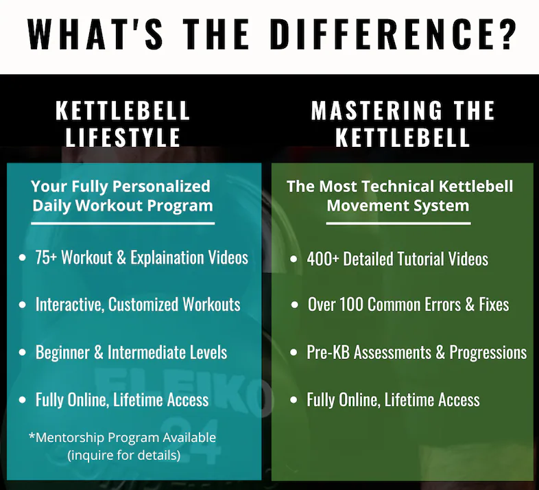

Hi {first_name},
Having been a broken, over-trained athlete for so long, and then having gone through the rehab process, achieving the rank Kettlebell Master of Sport, and teaching to over 1000 students, I'm here to share with you what I've learned from direct experience. Both Kettlebell Lifestyle and Mastering the Kettlebell are the culmination of 15+ years of blood, sweat, and tears both on and off the platform.
One thing I recently realized however related to these two programs that over 45% of my followers did not know I had two completely different programs.
This was humbling (and even shocking) to learn, and so I created a graphic included here to highlight some of the key differences.

Use code: HOLIDAY50 for 50% off
*Also, if you get both you'll also get one-month free of weekly Live Bulgarian Bag and Kettlebell Workouts with me too!
You have until 11:59pmPST tonight, Monday hop on these specials.
Click here for Kettlebell Lifestyle.
Click here for Mastering the Kettlebell.
Wishing you all the best and I hope to see you in one or both of these incredible programs soon!
Mike